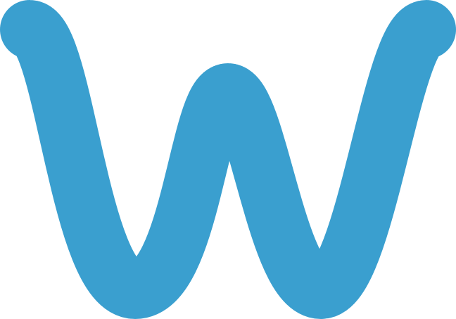
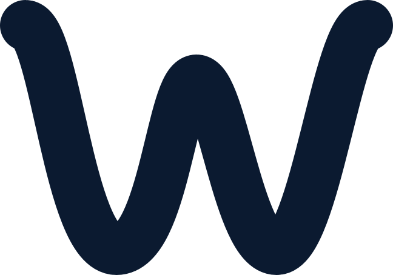

Hold a key and talk.
WordFlow turns speech into text wherever your cursor is, privately, on your own machine. The brand should feel like that experience: quiet, fluid and trustworthy. Words flow like water. Nothing shouts.
Soft gradients, drifting waves, gentle motion. Speech becomes text without friction.
Deep, steady blues. Everything stays on your device, and the brand says so plainly.
Generous space, one accent color, light type. The work is the user's words, not our UI.
One unbroken ribbon, shaped like a "W", rides on teal-to-blue water: speech running smoothly into words. Use the app icon wherever possible; use the bare mark when the tile would clash. The name is always WordFlow, with a capital F.



App icon · Mark in Lagoon Blue · Mark reversed · Mark in Navy. Files in brand/logo/.
Keep clear space equal to half the icon's height on every side. Smallest sizes: icon 16 px, lockup 96 px wide. The wordmark is Inter SemiBold, −4% tracking, set at 0.7× the icon's height.
One strong blue does the work. Everything else is navy ink and blue-tinted neutrals. Status colors appear only to report status.
Rough proportions: mostly Mist and Foam, Navy for words, Blue used sparingly. Brand gradient: #86E2D8 → #56B8DE → #3A7CBF, top-left to bottom-right. It belongs to the icon and brand moments; the app UI stays in WordFlow Blue.
One typeface everywhere: app, site, social. Large text is light and tightly tracked; small text is regular and open. Inter is free under the SIL Open Font License.
Two brand motifs, both from water. Waves drift sideways behind hero moments; ripples swell around the hotkey. Motion is slow, constant and never bouncy, and it stops when the user asks for reduced motion.
Three sine waves, 2 / 3 / 4 crests. Loops of 12 s, 16 s, 21 s, linear; the middle wave runs the other way. Opacity 30% / 18% / 11%. Edges fade out.
Three rings around the key, 5.4 s ease-in-out, scaling 0.97 → 1.04, staggered by 1.8 s.
150–200 ms, ease cubic-bezier(.2,.9,.3,1). Things fade and rise 4 px into place.
Four radii, two shadows. Lists use hairlines, not boxes. Strong shadows only for things that float.
Inner · 6 px
Control · 9 px
Card · 14 px
Panel · 18 px
Short, plain sentences. Talk about what the user gets, not how it works. Be reassuring about privacy without making a big deal of it.
Hold fn and talk.
Nothing leaves this Mac.
Learned "Kubernetes". It'll be spelled right from now on.
Unleash the power of AI-driven voice productivity!
Our on-device neural engine leverages local inference.
Dictionary entry successfully created.